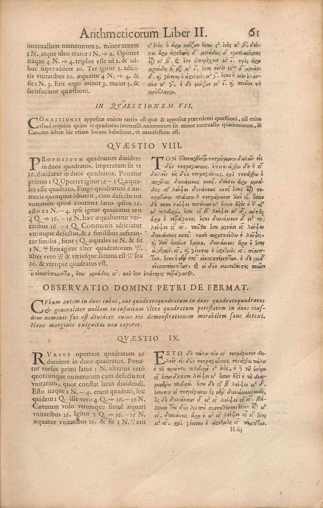
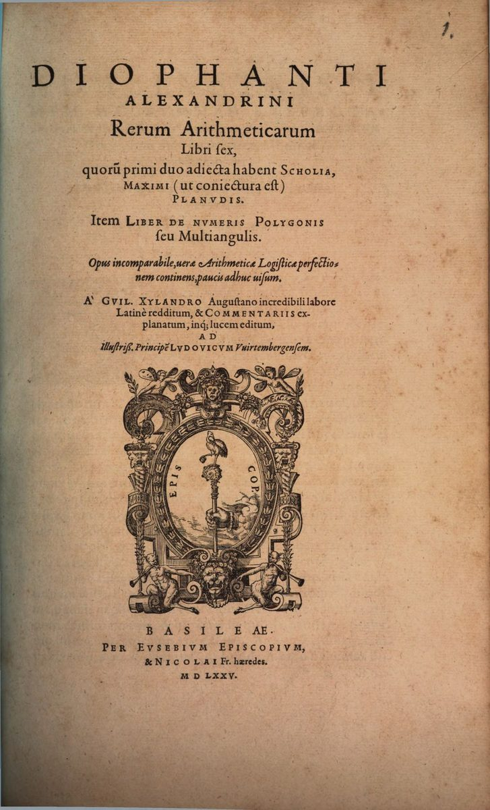
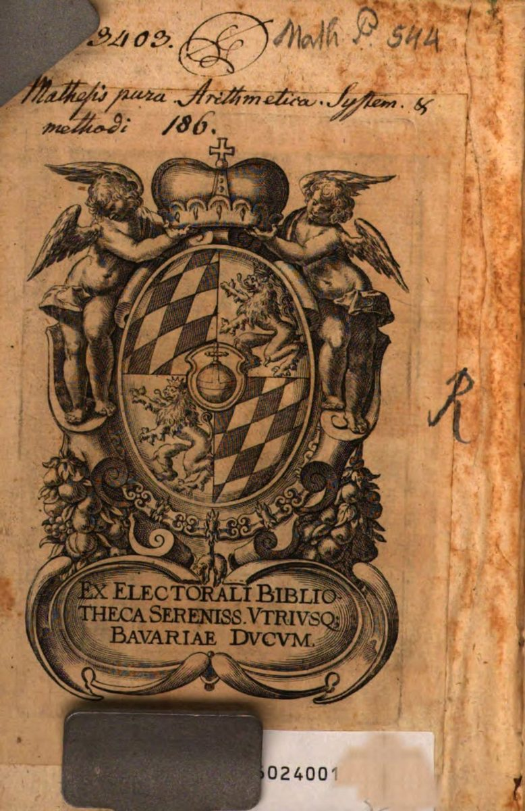
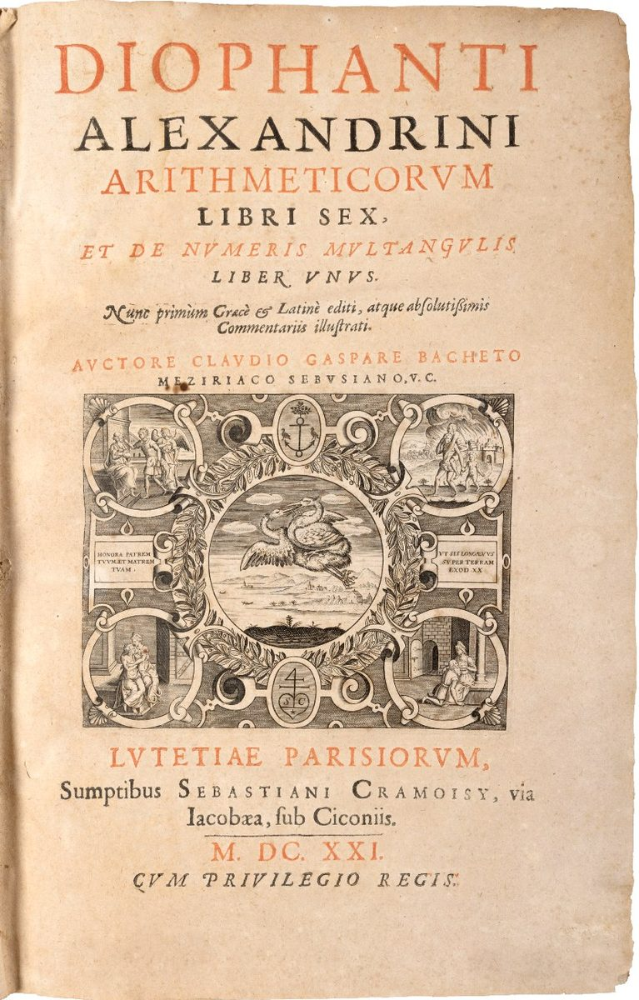
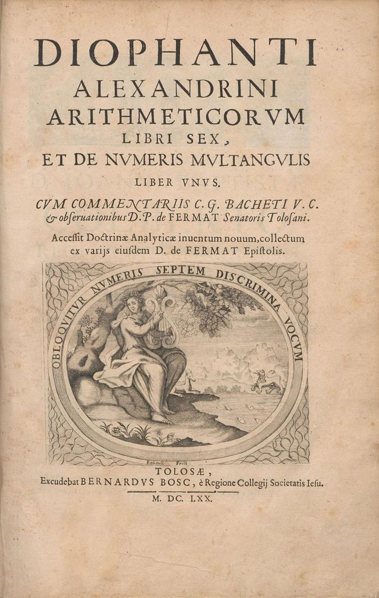
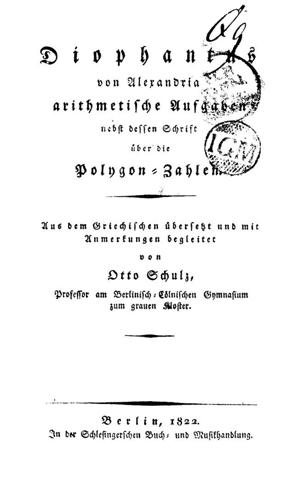
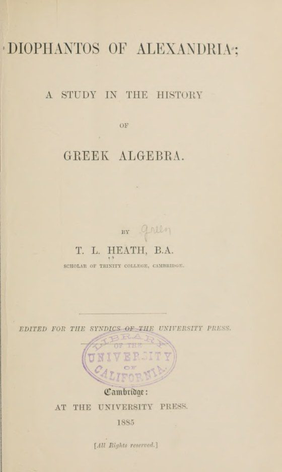
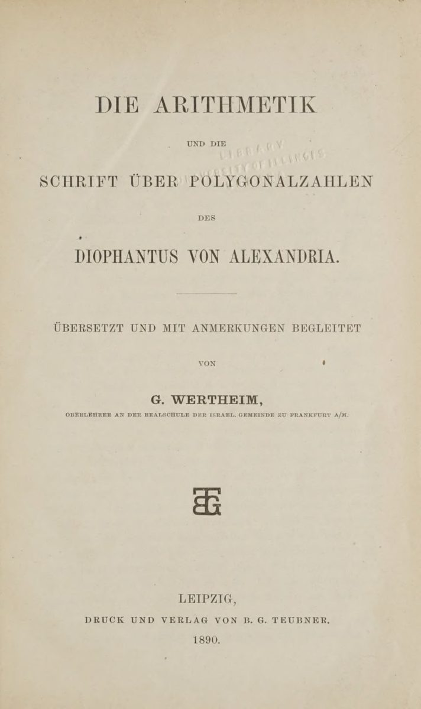
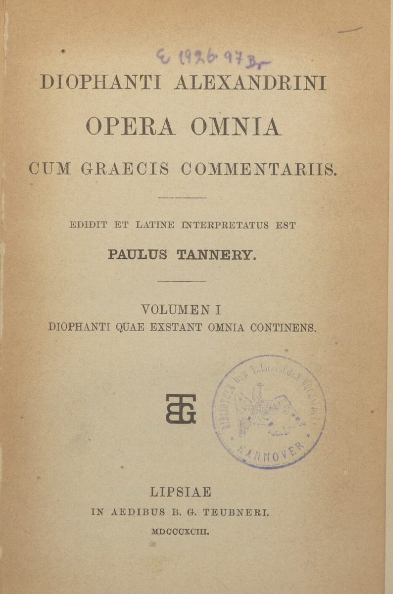
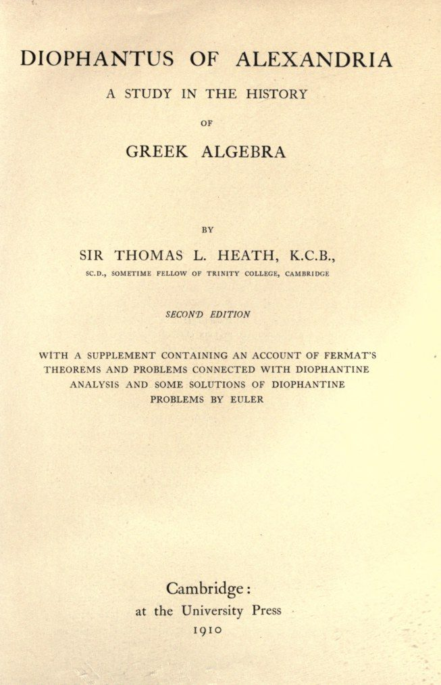

ΑΡΙΘΜΗΤΙΚΑ
Hacia el siglo III, en Alejandría, Diofanto reunió trece libros de problemas sobre números y los resolvió nombrando una incógnita, el arithmós, y escribiendo sus potencias con signos abreviados: es el álgebra más antigua que se conserva. Aquí están los diez libros que han llegado hasta nosotros, problema a problema, con la resolución de Diofanto, su lectura moderna y la geometría que esconde cada uno.
Around the third century, in Alexandria, Diophantus gathered thirteen books of problems about numbers and solved them by naming an unknown, the arithmos, and writing its powers with abbreviated signs: it is the oldest algebra that survives. Here are the ten books that have come down to us, problem by problem, with Diophantus’s solution, its modern reading and the geometry hidden in each one.
Un problema al azarA random problem El problema de Fermat, II.8Fermat’s problem, II.8 Las 48 observaciones de FermatFermat’s 48 observations

Los trece libros en su orden original. Se conservan diez: tres al principio y tres al final en griego, cuatro en medio en la traducción árabe; los tres últimos se perdieron.
The thirteen books in their original order. Ten survive: three at the beginning and three at the end in Greek, four in the middle in the Arabic translation; the last three are lost.
De la vida de Diofanto apenas sabemos lo que cuenta el epigrama de la Antología Palatina: fue niño una sexta parte de su vida, joven una doceava, se casó una séptima parte después, tuvo un hijo cinco años más tarde, el hijo vivió la mitad que el padre y Diofanto murió cuatro años después. Resuelto el problema, vivió 84 años.
Of Diophantus’s life we know little more than the epigram in the Palatine Anthology tells: he was a boy for a sixth of his life, a youth for a twelfth, married a seventh later, had a son five years after that, the son lived half as long as his father, and Diophantus died four years later. Solve the problem and he lived 84 years.
La Aritmética es el primer texto conservado que nombra una incógnita y escribe sus potencias con signos abreviados. Diofanto llama a la incógnita «número» (arithmós) y a sus potencias por su nombre geométrico o por composición de nombres; en los manuscritos esas palabras aparecen abreviadas.
| Signo | Palabra griega | Significado | Hoy |
|---|---|---|---|
| ς | ἀριθμός, arithmós | el número buscado, la incógnita | x |
| ΔΥ | δύναμις, dýnamis | su cuadrado («potencia») | x² |
| ΚΥ | κύβος, kýbos | su cubo | x³ |
| ΔΥΔ | δυναμοδύναμις | cuadrado del cuadrado | x⁴ |
| ΔΚΥ | δυναμόκυβος | cuadrado por cubo | x⁵ |
| ΚΥΚ | κυβόκυβος | cubo del cubo | x⁶ |
| Μο | μονάδες, monádes | las unidades: el término numérico | 1 |
| ςχ, ΔΥχ | ἀριθμοστόν, δυναμοστόν | las partes recíprocas de la incógnita y de su cuadrado | 1/x, 1/x² |
| ⋔ | λεῖψις, léipsis | «falta»: resta; todo lo que se resta va agrupado detrás | − |
| ἴσ. | ἴσοι, ísoi | «son iguales»: separa los dos miembros | = |
Las reglas para escribir una expresión son tres: los términos se suman poniéndolos uno junto a otro, sin signo; cada potencia va seguida de su coeficiente, escrito con las letras-número griegas (α = 1, β = 2, …, ι = 10, κ = 20, …, ρ = 100, de modo que ις = 16); y todos los términos que se restan se agrupan al final, detrás del signo ⋔. Las fracciones se escriben de varias maneras, por ejemplo con la expresión ἐν μορίῳ («en la parte de»).
Por ejemplo,
ΚΥ α ς η ⋔ ΔΥ ε Μο α
que hoy escribimos x³ − 5x² + 8x − 1: el cubo y las ocho incógnitas se suman, y el cuadrado quíntuple y la unidad se restan. La ecuación del problema II.8, la de la portada, es
ΔΥ δ Μο ις ⋔ ς ις ἴσ. Μο ις ⋔ ΔΥ α
es decir, 4x² + 16 − 16x = 16 − x².
Estos signos nos llegan a través de manuscritos bizantinos muy posteriores a Diofanto, y su forma varía de uno a otro; los estudios recientes, como los de Christianidis y Oaks, los leen más como abreviaturas de palabras que como símbolos en el sentido moderno. Los libros árabes no usan signos: todo se escribe con palabras, la «cosa» (shayʾ), el māl y el «cubo» (kaʿb).
The Arithmetica is the earliest surviving text that names an unknown and writes its powers with abbreviated signs. Diophantus calls the unknown “number” (arithmos) and its powers by their geometric names or by combinations of names; in the manuscripts these words appear abbreviated.
| Sign | Greek word | Meaning | Today |
|---|---|---|---|
| ς | ἀριθμός, arithmós | the number sought, the unknown | x |
| ΔΥ | δύναμις, dýnamis | its square (“power”) | x² |
| ΚΥ | κύβος, kýbos | its cube | x³ |
| ΔΥΔ | δυναμοδύναμις | square of the square | x⁴ |
| ΔΚΥ | δυναμόκυβος | square times cube | x⁵ |
| ΚΥΚ | κυβόκυβος | cube of the cube | x⁶ |
| Μο | μονάδες, monádes | the units: the numerical term | 1 |
| ςχ, ΔΥχ | ἀριθμοστόν, δυναμοστόν | the reciprocal parts of the unknown and of its square | 1/x, 1/x² |
| ⋔ | λεῖψις, léipsis | “lack”: subtraction; everything subtracted is grouped after it | − |
| ἴσ. | ἴσοι, ísoi | “are equal”: separates the two sides | = |
There are three rules for writing an expression: terms are added by placing them side by side, with no sign; each power is followed by its coefficient, written with the Greek letter-numerals (α = 1, β = 2, …, ι = 10, κ = 20, …, ρ = 100, so that ις = 16); and all the terms that are subtracted are grouped at the end, after the sign ⋔. Fractions are written in several ways, for instance with the phrase ἐν μορίῳ (“in the part of”).
For example,
ΚΥ α ς η ⋔ ΔΥ ε Μο α
which we write today as x³ − 5x² + 8x − 1: the cube and the eight unknowns are added, and the five squares and the unit are subtracted. The equation of problem II.8, the one on the front page, is
ΔΥ δ Μο ις ⋔ ς ις ἴσ. Μο ις ⋔ ΔΥ α
that is, 4x² + 16 − 16x = 16 − x².
These signs reach us through Byzantine manuscripts written long after Diophantus, and their form varies from one to another; recent studies, such as those of Christianidis and Oaks, read them as abbreviations of words rather than as symbols in the modern sense. The Arabic books use no signs: everything is written in words, the “thing” (shayʾ), the māl and the “cube” (kaʿb).
Portadas de las ediciones y traducciones principales, de Xylander (1575) a Heath (1910), todas de dominio público, y la página 61 de la edición de 1670 con el problema II.8 y la observación de Fermat.
Title pages of the main editions and translations, from Xylander (1575) to Heath (1910), all in the public domain, and page 61 of the 1670 edition with problem II.8 and Fermat’s observation.









Los seis libros griegos siguen la numeración de Tannery y Heath. Los cuatro libros árabes, traducidos por Qusta ibn Luqa en el siglo IX, se intercalan entre el III y el IV griegos; siguen la numeración de Sesiano.
The six Greek books follow the numbering of Tannery and Heath. The four Arabic books, translated by Qusta ibn Luqa in the ninth century, fall between Greek Books III and IV; they follow Sesiano’s numbering.
Casi todos los problemas de Diofanto definen variedades racionales (puntos, cónicas, superficies cuádricas), y su método consiste en cortarlas con rectas y cónicas hasta dar con un punto racional. En algunos problemas, sin embargo, aparece una curva de género 1 o 2.
En doce problemas, la curva que le queda a Diofanto tras sus elecciones es de género 1: una curva elíptica, donde su doble ecuación o su «tangente en el infinito» encuentran un punto racional. Otras siete están en el fondo de un problema aunque Diofanto no trabaje sobre ellas: las cúbicas x³ ± y³ = b de IV.1–2 y Va.7–8, que él corta con una recta; las curvas de los números congruentes de III.7 y V.7; y la cuártica de VIa.17. La tabla da para cada una el modelo de Weierstrass mínimo de su jacobiano, el grupo de Mordell–Weil (calculado con PARI: ellfromeqn, ellminimalmodel, ellrank) y su etiqueta en la LMFDB, tomada de las tablas de Cremona; las de conductor mayor que 500000 no tienen etiqueta porque la base de datos no llega a ellas.
| Problema | Curva | Jacobiano (modelo mínimo) | E(Q) | Punto de Diofanto | LMFDB |
|---|---|---|---|---|---|
| III.7 | y² = x³ − 720²x tres cuadrados en progresión aritmética de diferencia 720 = 5 · 12²: la curva del número congruente 5 | y² = x³ − 25x | Z × Z/2 × Z/2 | (1681, 62279): los cuadrados 31², 41², 49² | 800.d3 |
| IV.1 | x³ + y³ = 370 la recta x + y = 10 que impone Diofanto la corta solo en dos puntos | y² = x³ − 924075 | Z2 | (7, 3) | buscar por coeficientes sin etiqueta: conductor > 500000 |
| IV.2 | x³ − y³ = 504 cortada por la recta x − y = 6 | y² + y = x³ − 37 | Z | (8, 2) | 11907.o1 |
| IV.24 | (x − 3)² = 9 + c − c³ las dos condiciones del problema (x₁ + x₂ = 6, x₁x₂ = c³ − c) | y² = x³ − x + 9 | Z2 | x = 26/27, c = 17/9 | 8732.b1 |
| IV.28 | Y² = 9y⁴ − 4y³ + 6y² − 12y + 1 condición auxiliar con los cubos (y ± 1)³ | y² = x³ + 17 | Z2 | y = 9/8 | 10404.f2 |
| V.1 | Y² = (13t/2 − 12)(t² − 12) con el primer extremo fijado en 169/4 | y² = x³ − 555x + 3928 | Z × Z/2 | t = 361/104 | 82368.ch1 |
| V.2 | Y² = (19t/2 + 20)(t² + 20) con el primer extremo fijado en 361/4 | y² = x³ − x² + 1672x + 24102 | Z × Z/2 | t = 41/152 | buscar por coeficientes sin etiqueta: conductor > 500000 |
| V.7 | y² = x³ − 210²x triángulos rectángulos de área 210 (840 = 4 · 210): la curva del número congruente 210 | y² = x³ − 44100x | Z2 × Z/2 × Z/2 | (841/4, 1189/8): el triángulo (20, 21, 29) | buscar por coeficientes sin etiqueta: conductor > 500000 |
| V.29 | Y² = t⁴ + 337 con los cuadrados 16 y 9 fijados | y² = x³ − 1348x | Z2 × Z/2 | t² = 144/25 | buscar por coeficientes sin etiqueta: conductor > 500000 |
| VI.6 | Y² = (14y + 1)(y² + 1) el triángulo auxiliar (1, y) | y² = x³ + x² + 196x + 196 | Z × Z/2 | y = 24/7 | 5516.a2 |
| VI.8 | Y² = (y² + 1)(y² + 14y + 1) el triángulo auxiliar | y² = x³ − x² + 191x + 193 | Z × Z/2 | y = 45/28 | 1344.c4 |
| VI.10 | Y² = y⁴ + 8y³ + 18y² + 12y + 1 discriminante cuadrado para el triángulo (1, y + 1) | y² + y = x³ − x | Z | y = 4/5 | 37.a1 |
| VI.17 | u² + 2 = v³ curva de Mordell y² = x³ − 2: solo un punto entero, el de Diofanto y Fermat | y² = x³ − 2 | Z | (3, 5) | 1728.o3 |
| VI.18 | u³ + 2 = v² curva de Mordell y² = x³ + 2; el punto de Diofanto es el doble del generador | y² = x³ + 2 | Z | (17/4, 71/8) | 1728.n4 |
| VI.22 | Y² = (y + 64)(y² − 6144y + 1048576) con el perímetro fijado en 64 | y² + xy = x³ − 178x − 924 | Z × Z/2 | y = 39424/225 | 706.b1 |
| Va.7 | x³ + y³ = 2240 cortada por la recta x + y = 20 | y² + y = x³ − 8269 | Z | (12, 8) | 33075.be1 |
| Va.8 | x³ − y³ = 2170 cortada por la recta x − y = 10 | y² = x³ − 31785075 | Z2 | (13, 3) | buscar por coeficientes sin etiqueta: conductor > 500000 |
| VIa.11 | u² − 1 = v³ curva de Mordell y² = x³ + 1, de rango 0: por eso el 3 es forzoso | y² = x³ + 1 | Z/6 | (2, 3) | 36.a4 |
| VIa.17 | Y² = t⁴ + t² + t la condición en t = x²; es un cociente de la curva de género 2 de la tabla siguiente | y² = x³ + x² + 1 | Z | (1/4, 9/16) | 248.a1 |
Dos problemas llevan a curvas de género 2, que por el teorema de Faltings solo tienen un número finito de puntos racionales. En la de VIa.17 se conocen todos; la de IV.18, en cambio, está hoy fuera del alcance de los métodos que permiten determinarlos, y el problema de hallar todos sus puntos parece abierto.
| Problema | Curva | Cómo aparece | Jacobiano | Puntos racionales | LMFDB |
|---|---|---|---|---|---|
| IV.18 | y² = x⁶ − 128x³ + x + 4096 | Sección x₂ = 64 − x₁³ de la superficie del problema; y es la raíz de x₂² + x₁. | Rango entre 3 y 5, y rango analítico 3 suponiendo la hipótesis de Riemann generalizada (la conjetura de Birch y Swinnerton-Dyer predice, pues, rango 3). End(J) = Z: el jacobiano no se descompone ni tiene multiplicaciones reales. Como el rango supera al género, no se aplican Chabauty–Coleman (exige rango menor que el género), ni el Chabauty elíptico ni los métodos bielípticos (exigen que J se descomponga), ni el Chabauty cuadrático actual (exige rango igual al género y End(J) mayor que Z). | Conocidos, hasta altura 2000: los dos del infinito, (0, ±64), (4, ±2), (−1/16, ±262143/4096) y el de Diofanto, (1/16, ±262145/4096). Los dos primeros dan soluciones degeneradas (x₁ = 0 o x₂ = 0) y el tercero un número negativo: el de Diofanto es el único útil. Determinar todos los puntos racionales parece ser un problema abierto: un reto natural para la teoría de Chabauty–Kim en profundidad 3 o mayor sobre curvas genéricas, como lo fue la curva de VIa.17 para el Chabauty elíptico en los años noventa. | No está: su discriminante supera 10⁶. |
| VIa.17 | y² = x⁶ + x² + 1 | Los tres cuadrados x², x⁴, x⁸ suman un cuadrado: x⁸ + x⁴ + x² = Y², y dividiendo por x² queda esta curva. | Bielíptica: el jacobiano es isógeno a E₁ × E₂ con E₁: y² = x³ + x + 1 (496.a1) y E₂: y² = x³ + x² + 1 (248.a1), ambas de rango 1; rango 2 y conductor 123008. | Exactamente ocho: los dos del infinito, (0, ±1) y (±1/2, ±9/8). Lo demostró Wetherell en 1997 con el método de Chabauty elíptico, resolviendo así este problema de Diofanto: x = 1/2 es la única solución positiva, la que él encontró. | No está: su discriminante mínimo, −2¹⁴ · 31², supera 10⁶. La única curva de conductor 123008 de la LMFDB, 123008.a.246016.1, es otra: tiene invariantes de Igusa distintos y jacobiano simple. |
No aparece en la obra ninguna curva de género mayor que 2. Las más famosas, las de Fermat xⁿ + yⁿ = 1 con n > 2, de género (n − 1)(n − 2)/2 y sin puntos racionales no triviales, solo están en la nota que Fermat escribió junto a II.8; la circunferencia de Diofanto, x² + y² = 16, es de género 0.
Almost all of Diophantus’s problems define rational varieties (points, conics, quadric surfaces), and his method consists in cutting them with lines and conics until a rational point appears. In some problems, however, a curve of genus 1 or 2 arises.
In twelve problems, the curve left to Diophantus after his choices has genus 1: an elliptic curve, where his double equation or his “tangent at infinity” finds a rational point. Seven more lie behind a problem although Diophantus does not work on them: the cubics x³ ± y³ = b of IV.1–2 and Va.7–8, which he cuts with a line; the congruent-number curves of III.7 and V.7; and the quartic of VIa.17. The table gives for each the minimal Weierstrass model of its Jacobian, the Mordell–Weil group (computed with PARI: ellfromeqn, ellminimalmodel, ellrank) and its LMFDB label, taken from Cremona’s tables; those of conductor above 500000 have no label because the database does not reach them.
| Problem | Curve | Jacobian (minimal model) | E(Q) | Diophantus’s point | LMFDB |
|---|---|---|---|---|---|
| III.7 | y² = x³ − 720²x three squares in arithmetic progression with difference 720 = 5 · 12²: the curve of the congruent number 5 | y² = x³ − 25x | Z × Z/2 × Z/2 | (1681, 62279): the squares 31², 41², 49² | 800.d3 |
| IV.1 | x³ + y³ = 370 the line x + y = 10 imposed by Diophantus meets it in two points only | y² = x³ − 924075 | Z2 | (7, 3) | search by coefficients no label: conductor > 500000 |
| IV.2 | x³ − y³ = 504 cut by the line x − y = 6 | y² + y = x³ − 37 | Z | (8, 2) | 11907.o1 |
| IV.24 | (x − 3)² = 9 + c − c³ the two conditions of the problem (x₁ + x₂ = 6, x₁x₂ = c³ − c) | y² = x³ − x + 9 | Z2 | x = 26/27, c = 17/9 | 8732.b1 |
| IV.28 | Y² = 9y⁴ − 4y³ + 6y² − 12y + 1 auxiliary condition with the cubes (y ± 1)³ | y² = x³ + 17 | Z2 | y = 9/8 | 10404.f2 |
| V.1 | Y² = (13t/2 − 12)(t² − 12) with the first extreme fixed at 169/4 | y² = x³ − 555x + 3928 | Z × Z/2 | t = 361/104 | 82368.ch1 |
| V.2 | Y² = (19t/2 + 20)(t² + 20) with the first extreme fixed at 361/4 | y² = x³ − x² + 1672x + 24102 | Z × Z/2 | t = 41/152 | search by coefficients no label: conductor > 500000 |
| V.7 | y² = x³ − 210²x right triangles of area 210 (840 = 4 · 210): the curve of the congruent number 210 | y² = x³ − 44100x | Z2 × Z/2 × Z/2 | (841/4, 1189/8): the triangle (20, 21, 29) | search by coefficients no label: conductor > 500000 |
| V.29 | Y² = t⁴ + 337 with the squares 16 and 9 fixed | y² = x³ − 1348x | Z2 × Z/2 | t² = 144/25 | search by coefficients no label: conductor > 500000 |
| VI.6 | Y² = (14y + 1)(y² + 1) the auxiliary triangle (1, y) | y² = x³ + x² + 196x + 196 | Z × Z/2 | y = 24/7 | 5516.a2 |
| VI.8 | Y² = (y² + 1)(y² + 14y + 1) the auxiliary triangle | y² = x³ − x² + 191x + 193 | Z × Z/2 | y = 45/28 | 1344.c4 |
| VI.10 | Y² = y⁴ + 8y³ + 18y² + 12y + 1 square discriminant for the triangle (1, y + 1) | y² + y = x³ − x | Z | y = 4/5 | 37.a1 |
| VI.17 | u² + 2 = v³ Mordell curve y² = x³ − 2: one integer point only, Diophantus’s and Fermat’s | y² = x³ − 2 | Z | (3, 5) | 1728.o3 |
| VI.18 | u³ + 2 = v² Mordell curve y² = x³ + 2; Diophantus’s point is twice the generator | y² = x³ + 2 | Z | (17/4, 71/8) | 1728.n4 |
| VI.22 | Y² = (y + 64)(y² − 6144y + 1048576) with the perimeter fixed at 64 | y² + xy = x³ − 178x − 924 | Z × Z/2 | y = 39424/225 | 706.b1 |
| Va.7 | x³ + y³ = 2240 cut by the line x + y = 20 | y² + y = x³ − 8269 | Z | (12, 8) | 33075.be1 |
| Va.8 | x³ − y³ = 2170 cut by the line x − y = 10 | y² = x³ − 31785075 | Z2 | (13, 3) | search by coefficients no label: conductor > 500000 |
| VIa.11 | u² − 1 = v³ Mordell curve y² = x³ + 1, of rank 0: hence 3 is forced | y² = x³ + 1 | Z/6 | (2, 3) | 36.a4 |
| VIa.17 | Y² = t⁴ + t² + t the condition in t = x²; it is a quotient of the genus-2 curve in the next table | y² = x³ + x² + 1 | Z | (1/4, 9/16) | 248.a1 |
Two problems lead to curves of genus 2, which by Faltings’s theorem have only finitely many rational points. For that of VIa.17 all are known; that of IV.18, by contrast, is currently beyond the reach of the methods that determine them, and finding all its points appears to be an open problem.
| Problem | Curve | How it arises | Jacobian | Rational points | LMFDB |
|---|---|---|---|---|---|
| IV.18 | y² = x⁶ − 128x³ + x + 4096 | Section x₂ = 64 − x₁³ of the surface of the problem; y is the root of x₂² + x₁. | Rank between 3 and 5, and analytic rank 3 assuming the generalized Riemann hypothesis (so the Birch and Swinnerton-Dyer conjecture predicts rank 3). End(J) = Z: the Jacobian neither splits nor has real multiplication. Since the rank exceeds the genus, none of the following apply: Chabauty–Coleman (requires rank less than the genus), elliptic Chabauty or bielliptic methods (require J to split), or current quadratic Chabauty (requires rank equal to the genus and End(J) larger than Z). | Known, up to height 2000: the two at infinity, (0, ±64), (4, ±2), (−1/16, ±262143/4096) and Diophantus’s, (1/16, ±262145/4096). The first two give degenerate solutions (x₁ = 0 or x₂ = 0) and the third a negative number: Diophantus’s is the only useful one. Determining all the rational points appears to be an open problem: a natural challenge for Chabauty–Kim theory in depth 3 or more on generic curves, as the curve of VIa.17 was for elliptic Chabauty in the 1990s. | Not included: its discriminant exceeds 10⁶. |
| VIa.17 | y² = x⁶ + x² + 1 | The three squares x², x⁴, x⁸ add up to a square: x⁸ + x⁴ + x² = Y², and dividing by x² this curve remains. | Bielliptic: the Jacobian is isogenous to E₁ × E₂ with E₁: y² = x³ + x + 1 (496.a1) and E₂: y² = x³ + x² + 1 (248.a1), both of rank 1; rank 2 and conductor 123008. | Exactly eight: the two at infinity, (0, ±1) and (±1/2, ±9/8). Wetherell proved it in 1997 with the elliptic Chabauty method, thereby solving this problem of Diophantus: x = 1/2 is the only positive solution, the one he found. | Not included: its minimal discriminant, −2¹⁴ · 31², exceeds 10⁶. The only curve of conductor 123008 in the LMFDB, 123008.a.246016.1, is a different one: it has different Igusa invariants and a simple Jacobian. |
No curve of genus greater than 2 appears in the work. The most famous ones, the Fermat curves xⁿ + yⁿ = 1 with n > 2, of genus (n − 1)(n − 2)/2 and with no non-trivial rational points, appear only in the note Fermat wrote beside II.8; Diophantus’s circle, x² + y² = 16, has genus 0.
La Aritmética se ha traducido completa a muy pocas lenguas. El texto griego se conserva en una treintena de manuscritos bizantinos, el más antiguo e importante el Matritensis (Madrid, Biblioteca Nacional, Ms. 4678, siglo XI); los libros árabes solo en el manuscrito de Mashhad hallado en 1968.
De otras lenguas no se conoce traducción completa.
The Arithmetica has been translated in full into very few languages. The Greek text survives in some thirty Byzantine manuscripts, the oldest and most important being the Matritensis (Madrid, Biblioteca Nacional, MS 4678, eleventh century); the Arabic books survive only in the Mashhad manuscript found in 1968.
No complete translation into other languages is known.
Selección de estudios históricos y artículos matemáticos dedicados a Diofanto y a su Aritmética, con los títulos en su lengua original; las ediciones y traducciones de la obra están en la sección Ediciones y traducciones. Esta bibliografía no es exhaustiva: la Aritmética se cita en miles de trabajos, entre ellos casi todos los que tratan de las ecuaciones diofánticas, el último teorema de Fermat, los números congruentes, las ternas y cuádruplas diofánticas, las sumas de cuadrados, los puntos racionales de las curvas elípticas o el décimo problema de Hilbert. Aquí se reúnen los estudios sobre la obra y su transmisión y una muestra de la investigación matemática actual que parte de sus problemas.
A selection of historical studies and mathematical articles devoted to Diophantus and his Arithmetica, with titles in their original language; the editions and translations of the work are in the section Editions and translations. This bibliography is not exhaustive: the Arithmetica is cited in thousands of works, among them almost all of those dealing with Diophantine equations, Fermat’s Last Theorem, congruent numbers, Diophantine triples and quadruples, sums of squares, rational points on elliptic curves or Hilbert’s tenth problem. Gathered here are the studies on the work and its transmission and a sample of current mathematical research that starts from its problems.